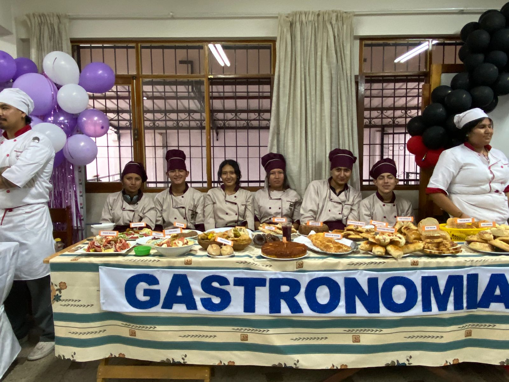
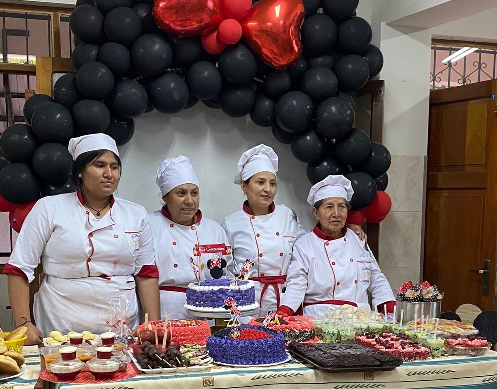
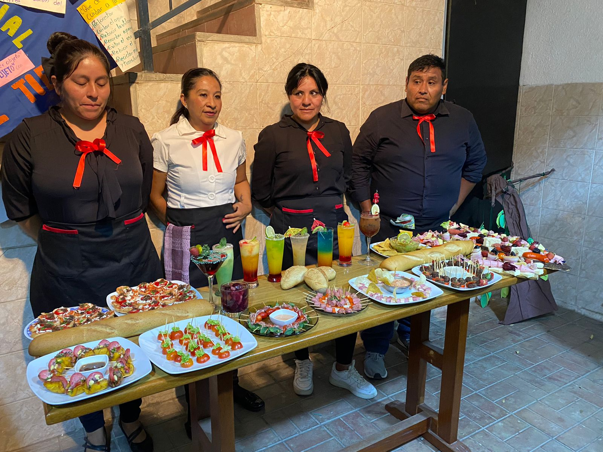

Gastronomía
Formación en arte culinario, técnicas de cocina, repostería y atención al cliente.
Técnico Básico
- Manipulación Higiénica de Alimentos
- Preparación de Ensaladas
- Bebidas Naturales y Refrescantes
- Recetario Nacional
- Ética Profesional
Técnico Auxiliar
- Pastelería Básica
- Platos Internacionales
- Decoración Gastronómica
- Conservas y Enlatados
- Menús Nutricionales
Técnico Medio I
- Administración de Cocina
- Marketing Gastronómico
- Panadería y Pastelería Avanzada
- Alta Cocina Boliviana
- Diseño de Recetarios
Técnico Medio II
- Nutrición y Dietética
- Costeo y Presupuesto de Alimentos
- Gestión de Eventos
- Servicio y Atención al Cliente
- Defensa de Proyecto
Galería


